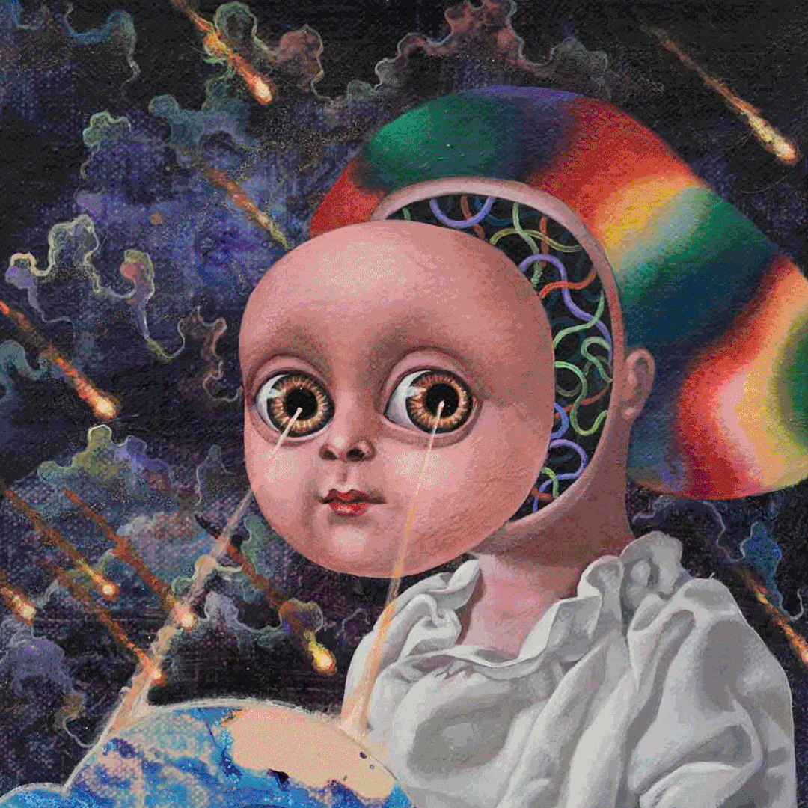

设计周刊 Design Weekly #43
📕 设计资源
macOS 11 Big Sur UI Kit
macOS UI Kit 的 Sketch 版本，包含了数百种组件、颜色和文本样式。
Shopify Polaris UI kit
https://www.figma.com/@shopify
Shopify 在 Figma 社区新增的 Polaris UI Kit。
A Designer’s Guide to SwiftUI
给设计师看到的 SwiftUI 入门指南，如果对 iOS 的交互感兴趣，可以考虑入手。
Figma for Beginners
免费的 Figma 入门电子邮件课程。
📗 设计文章
Notion 官方推出的网页搭建教程
https://www.notion.so/guides/build-a-website-with-notion-in-seconds-no-coding-required
用Notion在几秒钟内建立一个网站，不需要任何编码。
Design Thinking: The Learner’s Journey
https://www.nngroup.com/articles/design-thinking-learners-journey
尼尔森出品：设计思维学习的不同阶段。

📙 设计案例
极端乌托邦——理想与病态の创作语境
https://mp.weixin.qq.com/s/S0VGFkTEaMElGheWAmB3Pg
在“乌托邦之后”试图问我们乌托邦在哪里，我们如何设法将我们理想的乌托邦更贴近现实。是遥不可及的设想，还是真的在世界某处正在发生的不幸之地，又或者通过了反乌托现象投影过来的恶劣社会现象的反思，这些思想既表现了我们内心的向往，也反映了我们的当代现实这种贪婪不休的感觉表明。今天，让我们来重新审视亚洲各个地区的艺术家对当代乌托邦或反乌托邦的构想。而在这些空想主义者的世界观里我们又会起到什么样的共鸣~

这个轻食品牌的VI设计，清爽！
https://mp.weixin.qq.com/s/obrUm98zVetNQe2EBCxAaQ
在人们生活水平日渐提高的今天，吃得健康成为一件越来越重要的事情，部分人群开始改变重油、重盐的饮食习惯，转化为绿色健康的饮食理念，那就一起来看看这组轻食品牌的VI设计吧！
📙 设计灵感
盘点那些被卖饮品耽误的设计公司
https://www.shejipi.com/514665.html
今天来为大家盘点这些被卖茶耽误的设计公司，康康除了好喝的饮品外，它们还做了哪些事。 本期亮点：伏见桃山-日式设计在中国；喜茶-开创简笔画式Logo时代，联名狂魔；Machi Machi-周董中意的台式小清新
你是什么原因爱上设计的呢？
https://www.shejipi.com/516187.html
设计可以制造美的东西，生活中我们遇到的种种问题也可以通过设计来解决，行业之外看设计会觉得很有趣，行业内一直在坚持做设计的朋友们，大多都是热爱设计吧。